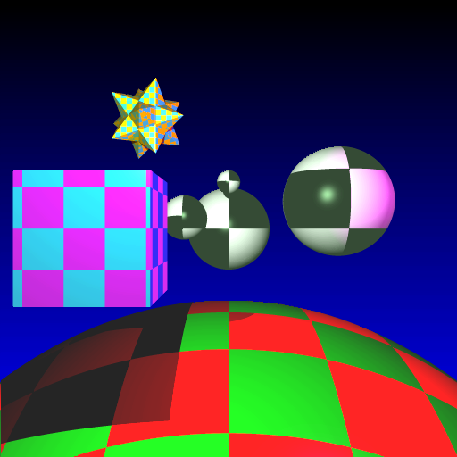
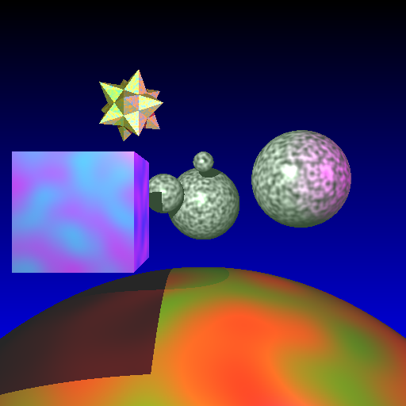
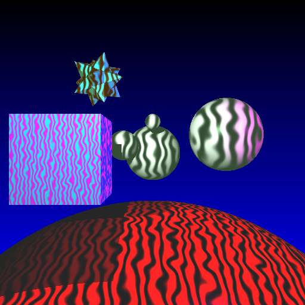
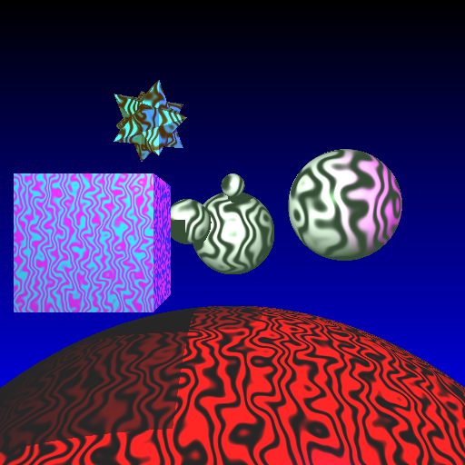
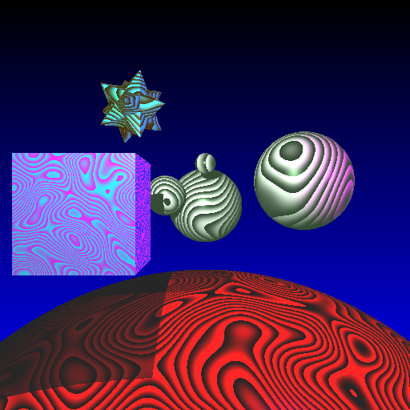
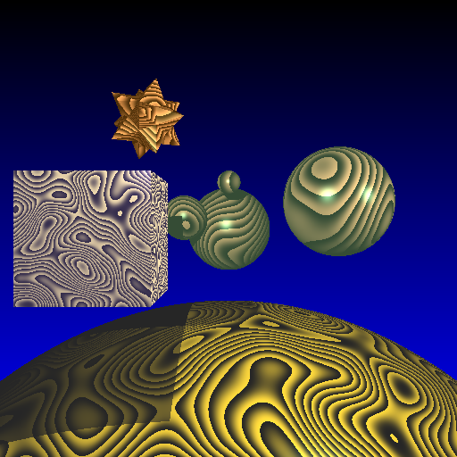
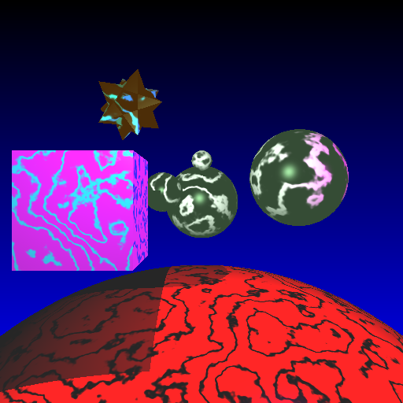
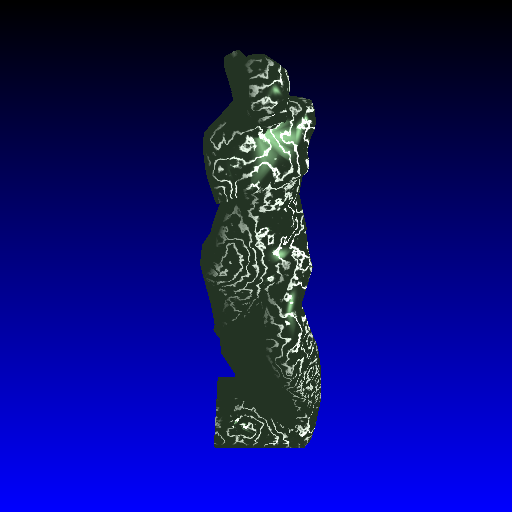

Objective 6:
Solid Texturing and Procedural Texturing using Noise
For this objective, I made a whole bunch of solid texture materials, including checkerboard and several Perlin Noise-generated textures, which are all callable from the LUA interface.
 Checkerboard texture  Perlin Noise with Linear Interpolation
Perlin Noise with Cosine Interpolation Perlin Wavy Texture, Noise Multiplier of 1  Perlin Wavy Texture, Noise Multiplier of 5  Perlin Wavy Texture, Noise Multiplier of 10  Perlin Wood Texture with weird colours  Perlin Wood Texture with better wood-like colours  Perlin Marble Texture  Venus De Milo mesh with Perlin Marble Texture |

Written by: Mike Jutan
CS 488 - Computer Graphics
University of Waterloo